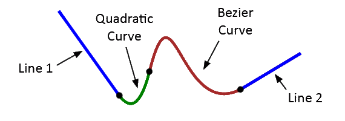

Đường dẫn path
html5 canvas paths
Để tạo đường path với HTML CANVAS, chúng ta có thể kết nối nhiều đưòng path phụ với nhau. Điểm kết thúc của mổi đường path phụ, sẽ cho điểm bắt đầu mới. Sử dụng kết hợp các phương thức lineTo(), arcTo(), quadraticCurveTo(), and bezierCurveTo() để tạo các đường path phụ với nhau.
Mỗi lần bắt đầu vẽ đường path mới cần sử dụng phương thức beginPath().
Cấu trúc: Sử dụng kết hợp các phương thức:
- .moveTo(x,y) : x,y tọa độ điểm bắt đầu.
- .lineTo(x,y).
- .arcTo(controlX,controlY,endX,endY,radius).
- .quadraticCurveTo(controlX, controlY, endX, endY);
- .bezierCurveTo(controlX1, controlY1, controlX2, controlY2, endX, endY);

Khung edit HTML : (có thể sửa và test trực tiếp)